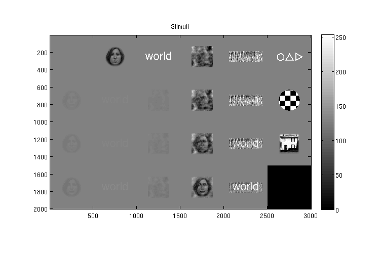
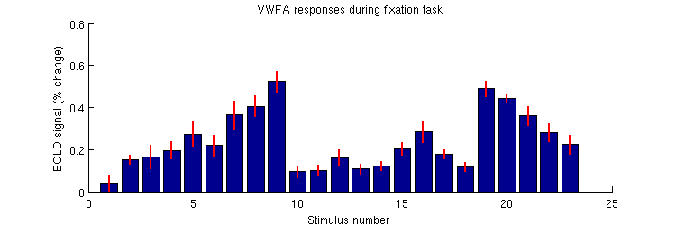
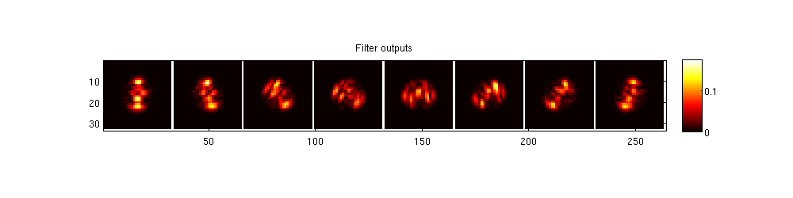
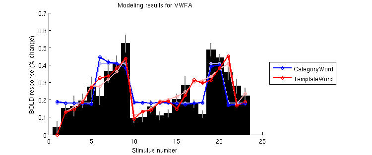

Example script illustrating the Template model and various control models
Contents
Add code to the MATLAB path
addpath(genpath('/home/stone/kendrick/knkutils'));
Load data
a1 = load('experiment1.mat');
Do some inspections
figure; setfigurepos([100 100 600 400]);
imagesc(makeimagestack(permute(double(a1.stimuli(:,:,1,:)),[1 2 4 3]),[],0));
colormap(gray); colorbar;
axis image tight;
title('Stimuli');

figure; setfigurepos([100 100 600 200]); hold on;
beta = a1.groupbeta(5,:,1);
betase = a1.groupbetase(5,:,1);
bar(beta);
errorbar2(1:length(beta),beta,betase,'v','r-','LineWidth',2);
xlabel('Stimulus number');
ylabel('BOLD signal (% change)');
title('VWFA responses during fixation task');

Perform some pre-processing of the stimuli
X = reshape(single(a1.stimuli),[500 500 10*23]);
X = single(processmulti(@imresize,double(X),[250 250]));
X = (X/254) - .5;
Prepare V1-like representation of the stimuli
pxtodeg = 1/240 * 2;
stimsize = 500 * pxtodeg;
cpfov = 4*stimsize;
[f,gbrs,gaus,sds,indices,info] = applymultiscalegaborfilters(squish(X,2)',cpfov,-1,1,8,2,0.01,2,0);
grid is 32 x 32, gbrsize is 52 (sd is 8.4325781308), indices is [1 9 17 25 33 41 49 57 65 73 81 89 97 105 113 121 129 137 145 153 161 169 177 185 193 201 209 217 225 233 241 249]
f = sqrt(blob(f.^2,2,2));
figure; setfigurepos([100 100 800 200]);
imagesc(makeimagestack(permute(reshape(f(10*4+1,:),8,32,32),[2 3 1]),[],[],[1 8]));
colormap(hot); colorbar;
axis image tight;
title('Filter outputs');

f = permute(reshape(f,10,23,[]),[1 3 2]);
f = f + j*upsamplematrix(blob(f,2,8)/8,8,2,[],'nearest');
ee = 1;
ss = 0.5;
f = real(f).^ee./(ss.^ee+imag(f).^ee);
Compute templates
templateix = [9 5];
templates = [];
for qq=1:length(templateix)
templates(qq,:) = mean(f(:,:,templateix(qq)),1);
end
Pre-compute some quantities
A = squish(permute(f,[1 3 2]),2) * templates';
B = mean(squish(permute(f,[1 3 2]),2),2);
Prepare for model fitting
modelnames = { ...
'Flat' ...
'CategoryWord' ...
'CategoryFace' ...
'TemplateWordOnlySub' ...
'TemplateWordOnlyDiv' ...
'TemplateWord' ...
'TemplateFaceOnlySub' ...
'TemplateFaceOnlyDiv' ...
'TemplateFace' ...
};
whroi = [5 6];
nr = length(whroi);
nd = 23;
nfolds = 23;
nm = length(modelnames);
data = permute(double(a1.groupbeta(whroi,:,1)),[2 1 3]);
datase = permute(double(a1.groupbetase(whroi,:,1)),[2 1 3]);
[nc,ncdist] = calcnoiseceiling(data',datase');
calculating noise ceiling..
.
..
.
..
..
.
..
..
..
.
.
.
done.
metricfun = @(x,y) calccod(x,y,1,0,0);
categories = a1.groupcategoryjudgment;
categories{1} = '';
Fit models
modelfit = NaN*zeros(nd,nr,nm);
modelparams = cell(1,nm);
modelpred = NaN*zeros(nd,nr,nm);
modelperformance = NaN*zeros(nr,nm);
for xx=1:2
switch xx
case 1
xvalscheme = 0;
extraopt = {'dosave','modelfit'};
case 2
xvalscheme = ones(nfolds,nd);
for p=1:nfolds
ix = picksubset(1:nd,[nfolds p]);
xvalscheme(p,ix) = -1;
end
extraopt = {};
[d,xvalschemeREV] = resamplingtransform(xvalscheme);
end
for mm=1:nm
switch mm
case 1
X = ones(nd,1);
seed0 = 0.1 * ones(1,1);
opt1 = struct('stimulus',X,'data',data, ...
'model',{{[] [-Inf(1,1); Inf(1,1)] @(p,x) x*p'}}, ...
'seed',seed0,'resampling',xvalscheme,'metric',metricfun, ...
'optimoptions',{{'Display','off'}},extraopt{:});
case 2
ix = ismember(categories,'WORD');
X = zeros(nd,2);
X( ix,1) = 1;
X(~ix,2) = 1;
seed0 = 0.1 * ones(1,2);
opt1 = struct('stimulus',X,'data',data, ...
'model',{{[] [-Inf(1,2); Inf(1,2)] @(p,x) x*p'}}, ...
'seed',seed0,'resampling',xvalscheme,'metric',metricfun, ...
'optimoptions',{{'Display','off'}},extraopt{:});
case 3
ix = ismember(categories,'FACE');
X = zeros(nd,2);
X( ix,1) = 1;
X(~ix,2) = 1;
seed0 = 0.1 * ones(1,2);
opt1 = struct('stimulus',X,'data',data, ...
'model',{{[] [-Inf(1,2); Inf(1,2)] @(p,x) x*p'}}, ...
'seed',seed0,'resampling',xvalscheme,'metric',metricfun, ...
'optimoptions',{{'Display','off'}},extraopt{:});
case {4 5 6 7 8 9}
complextyp = mod2(mm,3);
templatenum = ceil((mm-3)/3);
stimAB = [A(:,templatenum)/mean(A(:,templatenum)) B/mean(B)];
switch complextyp
case 1
cs = [0 .5 1 1.5 2 3 5];
seed0 = [];
cnt = 1;
for q=1:length(cs)
seed0(cnt,:) = [10 cs(q)];
cnt = cnt + 1;
end
opt1 = struct('stimulus',permute(reshape(stimAB,[10 nd 2]),[2 3 1]),'data',data, ...
'model',{{[] [-Inf(1,2); Inf(1,2)] ...
@(p,x) p(1) * posrect(x(:,1)-p(2)*x(:,2))}}, ...
'seed',seed0,'resampling',xvalscheme,'metric',metricfun, ...
'optimoptions',{{'Display','off'}},extraopt{:});
case 2
bs = [.01 .05 .1 .5 1 5 10];
seed0 = [];
cnt = 1;
for p=1:length(bs)
seed0(cnt,:) = [10 bs(p)];
cnt = cnt + 1;
end
opt1 = struct('stimulus',permute(reshape(stimAB,[10 nd 2]),[2 3 1]),'data',data, ...
'model',{{[] [-Inf(1,2); Inf(1,2)] ...
@(p,x) p(1) * (x(:,1) ./ (p(2)+x(:,2)))}}, ...
'seed',seed0,'resampling',xvalscheme,'metric',metricfun, ...
'optimoptions',{{'Display','off'}},extraopt{:});
case 3
bs = [.01 .05 .1 .5 1 5 10];
cs = [0 .5 1 1.5 2 3 5];
seed0 = [];
cnt = 1;
for p=1:length(bs)
for q=1:length(cs)
seed0(cnt,:) = [10 bs(p) cs(q)];
cnt = cnt + 1;
end
end
opt1 = struct('stimulus',permute(reshape(stimAB,[10 nd 2]),[2 3 1]),'data',data, ...
'model',{{[] [-Inf(1,3); Inf(1,3)] ...
@(p,x) p(1) * (posrect(x(:,1)-p(3)*x(:,2)) ./ (p(2)+x(:,2)))}}, ...
'seed',seed0,'resampling',xvalscheme,'metric',metricfun, ...
'optimoptions',{{'Display','off'}},extraopt{:});
end
end
results = fitnonlinearmodel(opt1);
switch xx
case 1
modelfit(:,:,mm) = squish(results.modelfit(1,:,:),2);
modelparams{mm} = squish(results.params(1,:,:),2);
case 2
modelpred(:,:,mm) = results.modelpred;
modelperformance(:,mm) = results.aggregatedtestperformance(1,:);
end
end
end
*** fitnonlinearmodel: started at 18-Feb-2017 09:32:31. ***
*** fitnonlinearmodel: outputdir = , chunksize = 2, chunknum = 1
*** fitnonlinearmodel: processing voxel 1 (1 of 2). ***
starting resampling case 1 of 1.
the seed is [0.100 ].
the estimated parameters are [0.239 ].
trainperformance is 76.75. testperformance is NaN.
aggregatedtestperformance is NaN.
*** fitnonlinearmodel: voxel 1 (1 of 2) took 0.4 seconds. ***
*** fitnonlinearmodel: processing voxel 2 (2 of 2). ***
starting resampling case 1 of 1.
the seed is [0.100 ].
the estimated parameters are [0.317 ].
trainperformance is 61.28. testperformance is NaN.
aggregatedtestperformance is NaN.
*** fitnonlinearmodel: voxel 2 (2 of 2) took 0.4 seconds. ***
*** fitnonlinearmodel: ended at 18-Feb-2017 09:32:32 (0.0 minutes). ***
*** fitnonlinearmodel: started at 18-Feb-2017 09:32:32. ***
*** fitnonlinearmodel: outputdir = , chunksize = 2, chunknum = 1
*** fitnonlinearmodel: processing voxel 1 (1 of 2). ***
starting resampling case 1 of 1.
the seed is [0.100 0.100 ].
the estimated parameters are [0.407 0.180 ].
trainperformance is 90.13. testperformance is NaN.
aggregatedtestperformance is NaN.
*** fitnonlinearmodel: voxel 1 (1 of 2) took 0.2 seconds. ***
*** fitnonlinearmodel: processing voxel 2 (2 of 2). ***
starting resampling case 1 of 1.
the seed is [0.100 0.100 ].
the estimated parameters are [0.295 0.324 ].
trainperformance is 61.38. testperformance is NaN.
aggregatedtestperformance is NaN.
*** fitnonlinearmodel: voxel 2 (2 of 2) took 0.2 seconds. ***
*** fitnonlinearmodel: ended at 18-Feb-2017 09:32:32 (0.0 minutes). ***
*** fitnonlinearmodel: started at 18-Feb-2017 09:32:32. ***
*** fitnonlinearmodel: outputdir = , chunksize = 2, chunknum = 1
*** fitnonlinearmodel: processing voxel 1 (1 of 2). ***
starting resampling case 1 of 1.
the seed is [0.100 0.100 ].
the estimated parameters are [0.212 0.249 ].
trainperformance is 77.10. testperformance is NaN.
aggregatedtestperformance is NaN.
*** fitnonlinearmodel: voxel 1 (1 of 2) took 0.0 seconds. ***
*** fitnonlinearmodel: processing voxel 2 (2 of 2). ***
starting resampling case 1 of 1.
the seed is [0.100 0.100 ].
the estimated parameters are [0.622 0.209 ].
trainperformance is 81.37. testperformance is NaN.
aggregatedtestperformance is NaN.
[...SNIP...]
trying seed 47 of 49.
the seed is [10.000 10.000 2.000 ].
the estimated parameters are [10.000 10.000 2.000 ].
trying seed 48 of 49.
the seed is [10.000 10.000 3.000 ].
the estimated parameters are [10.000 10.000 3.000 ].
trying seed 49 of 49.
the seed is [10.000 10.000 5.000 ].
the estimated parameters are [10.000 10.000 5.000 ].
seed 9 was best. final estimated parameters are [0.851 0.099 0.500 ].
trainperformance is 90.52. testperformance is 0.00.
aggregatedtestperformance is 84.79.
*** fitnonlinearmodel: voxel 2 (2 of 2) took 71.9 seconds. ***
*** fitnonlinearmodel: ended at 18-Feb-2017 09:35:44 (1.2 minutes). ***
modelpred = modelpred(xvalschemeREV,:,:);
Inspect modeling results
rr = 1;
whmodel = [2 6];
figure; setfigurepos([100 100 600 250]); hold on;
xxx = 1:nd;
yyy = data(:,rr);
yyyse = datase(:,rr);
h = bar(xxx,yyy,1);
set(h,'FaceColor','k');
set(errorbar2(xxx,yyy,yyyse,'v','k-','LineWidth',2),'Color',[.5 .5 .5]);
cmap0 = [0 0 1;
1 0 0];
h = []; h2 = [];
for mm=1:length(whmodel)
h(mm) = plot(xxx, modelfit(:,rr,whmodel(mm)),'o-','Color',(cmap0(mm,:)+2*[1 1 1])/3,'LineWidth',2);
h2(mm) = plot(xxx,modelpred(:,rr,whmodel(mm)),'o-','Color',cmap0(mm,:),'LineWidth',2);
end
ylabel('BOLD response (% change)');
legend(h2,modelnames(whmodel),'Location','EastOutside');
xlabel('Stimulus number');
title(sprintf('Modeling results for %s',a1.roilabels{whroi(rr)}));
